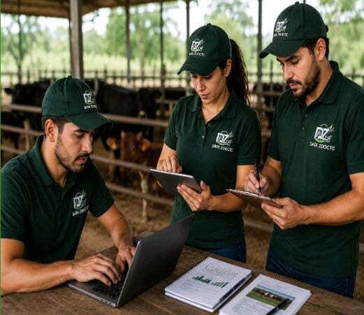

¿QUIENES SOMOS?

Somos una empresa dedicada a la prestación del servicio de informática aplicativa para todos los sistemas productivos para poder ayudar a los pequeños y medianos productores asistiendo los en análisis de datos de cada uno de los sistemas que los productores manejan haciendo que puedan tomar mejores decisiones a la hora de actuar sin miedo de perder dinero y rentabilidad. Nuestro propósito es convertir todo tipo de información en datos útiles que le puedan ayudar al productor a mejorar productividad, reducción de costos y la optimización de los procesos..